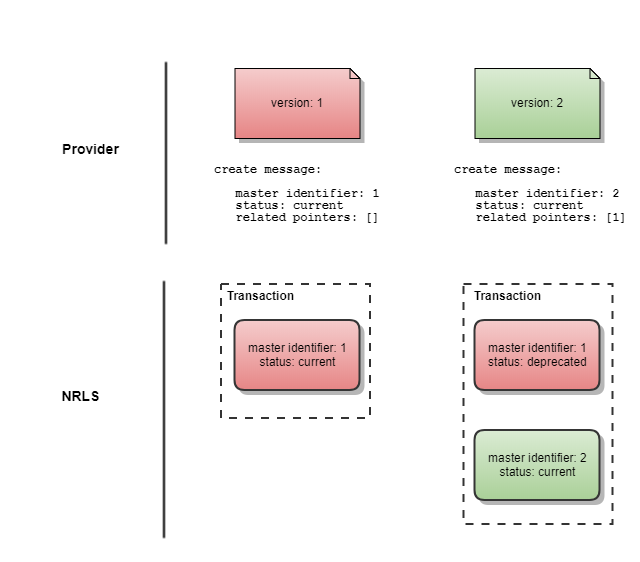

Overview
The NRL allows a Provider to perform four interactions in relation to Pointers:
- Create — Results in the storage of a brand new Pointer in NRL
- Update — Modify the status of an existing Pointer in NRL
- Supersede — Replace a pointer. This interaction marks the pointer as superseded and creates a new Pointer in the NRL
- Delete — Remove an existing Pointer from NRL. This Pointer will no longer appear in search results
A Pointer’s main role is to refer to another entity, which is some kind of content. The content may be static or dynamic.
Because of this, when considering Pointer maintenance, we must consider the maintenance of two entities:
- Changes to the Pointer’s data — the referenced content has not changed, but one or more of the data items captured on the Pointer needs to be modified. In this case, Providers should supersede the existing resource, resulting in the creation of a new Pointer with updated data items.
- Changes to the referenced content — in this case, Providers should supersede the existing resource, resulting in the creation of a new Pointer that references the modified content.
Creation of a New Pointer
The rules around when a Pointer is created will vary from Provider to Provider, because different business processes will be at play within their organisations. Having said that, there is some general guidance that can be given around when creation of a new pointer is appropriate.
As discussed in the concepts section, the NRL has the concept of a static and dynamic content in relation to what the Pointer is referencing. Static content will never change, whereas dynamic content is not guaranteed to be the same from one point in time to another in the future.
Static Content
Static content is typically content that undergoes version control. When a change is needed, rather than changing the content directly, a new version is created. This new version builds on the original and contains the modified content. Once the changes are complete, this new version is then considered immutable and becomes the current version, replacing the previous one. Rather than NRL holding one Pointer that references the current version of the content, it is recommended that Providers add a new Pointer for each version of their content.
What constitutes a new version is left up to Providers, as it is difficult to prescribe a global versioning policy. What is expected, however, is that there is only ever one current version of a Pointer for an item of content.

Figure 1: How different versions of static content are reflected in NRL. For each new version of static content, a new Pointer is created with a status of current, and the previous version moves from current to superseded.
Dynamic Content
Dynamic content makes none of the guarantees that static content makes. With static content, the consumer can be certain that the content will always be the same, regardless of the time it was retrieved. In contrast, dynamic content can vary depending upon when it was retrieved.
Dynamic content will typically be served up via an API. It is the lifecycle of the API that can be used to decide when referenced content has changed sufficiently to warrant an existing Pointer being superseded.
Examples of the kinds of things that Providers should consider as triggers to supersede a Pointer are:
- API contract
- API data sources
- API URL change or deprecation
API Contract
This involves changes to the way that a Consumer would interact with the API. This can cover changes in a number of areas:
- Data model — If the model that the content conforms to is changed, the Consumer may no longer be able to interpret the content.
- MIME type — If the format of the content as it is delivered to the Consumer changes, then Consumer may no longer be able to render the content.
- Security — If the mechanism for accessing secured content changes, the Consumer may not be able to access the content.
- Protocol — If the way the content is exchanged between Provider and Consumer changes, the Consumer may no longer be able to negotiate content retrieval.
API Data Sources
It is possible that the API is drawing data from multiple sources before aggregating the content ready for the Consumer. If the aggregating system is modified to draw data from additional sources, or one source is replaced with another, the content could be considered to have changed to such a degree that it should be reflected by superseding the current Pointer.
API URL Change Or Deprecation
If the URL of the API changes, or the API becomes deprecated, a new Pointer should be created and the old one marked as superseded to prevent Consumers from attempting to retrieve content from a non-existent or non-current location.
Deleting an Existing Pointer
Deleting a Pointer should only be done in exceptional circumstances. Under most circumstances, a Pointer should be replaced (superseded). If the Provider realises that the Pointer is simply not valid, then it should be updated and marked as entered in error. If the Provider does want to delete the Pointer, it should be done as soon as possible after creation to limit exposure to Consumers. However, even in this circumstance, the Provider should consider marking the Pointer as entered in error instead.
Updating an Existing Pointer
An update will be invoked on a Pointer when the Provider needs to change its status from current to entered-in-error. Providers can only change the status property on an existing Pointer. When any other attribute on the Pointer needs to be changed, the Pointer should be superseded, replacing it with an updated version.
Managing Pointers to Content
As noted above in the overview section, when a new version of content is created, a new Pointer should be created to reference the new content. Each time a new version of a Pointer is created, the existing one will be marked as superseded, and the new Pointer becomes current. For more detail, see Figure 2.
This is achieved through the combined use of three properties on the Pointer:
- Status
- Master identifier or logical identifier
- Related pointers

Figure 2: How Pointer versions are maintained in NRL. Each time a new Pointer version is needed, the create message should reference the master identifier or logical identifier of the Pointer to be superseded.
When the first version of a Pointer is created, the Provider specifies its status as current and can optionally assign a master identifier value (1 in Figure 2). In this first version of the Pointer, the related pointers collection will be empty.
The end result of asking the NRL to create that Pointer is illustrated on the left-hand side of Figure 2 above – a Pointer has been persisted with a Provider-issued master identifier and a status of current.
At some point in the future, the Provider determines that a new version of the Pointer should be created, perhaps because the static content that the original Pointer references has changed. In this case, the Provider wants a new Pointer to be created to reference the new static content and the existing Pointer to be marked as superseded.
The NRL supports this transition by leveraging the related pointers property in conjunction with the status property and the master identifier or logical identifier. The Provider creates a new Pointer where the status is marked as current, with a master identifier value (2 in Figure 2) that is different from the existing Pointer’s master identifier (see Pointer identity for more detail), and the related pointers collection is populated with the master identifier of the existing Pointer (1 in Figure 2).
Upon receipt of this Pointer, the NRL resolves the related Pointer and sets its status to superseded. Once this is successfully completed, the NRL persists the new pointer. The end result is that the NRL is now in the state described above: two Pointers exist where one has been superseded by the other. This pattern of superseding can be repeated indefinitely by a Provider, leading to multiple superseded versions of a Pointer, but there can only ever be one current version.
Pointer Lineage
A consequence of creating a relationship between Pointers where one supersedes another is that a lineage of Pointers is created.
In this context, “lineage” describes the line of descendants of an original Pointer. This line in effect describes each of the different versions of the content that each Pointer references. It is a view of the evolution of the content, with the oldest content being replaced by newer content.

Figure 3: Pointer lineage. As soon as a Pointer is replaced (superseded) by another one, a lineage of related Pointers is created.
Figure 3 above illustrates the lineage concept. Three Pointers exists in NRL (1, 2, and 3). Pointer 1 was the original and references content in the Provider’s system. After Pointer 1 was published, a new version of the content referenced was created. This triggered the Provider to publish a new Pointer (2) that superseded Pointer 1. Finally, the process was repeated with Pointer 3, which references the newest version of the content.